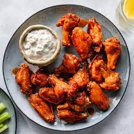

Chicken Wings

Buffalo wing, also called hot wing, chicken wing, or wing, deep-fried unbreaded chicken wings or drumsticks coated with a vinegar-and-cayenne-pepper hot sauce mixed with butter. They commonly are served with celery and a blue cheese dipping sauce, which acts as a cooling agent for the mouth.
A popular bar food and appetizer, wings can be ordered mild or spicy, and boneless varieties are also common. The name comes from Buffalo, New York, where the dish was created. Several origin stories exist, but the basic recipe is the same
Ingredients
- 4 pounds frozen chicken wings
- 1 tablespoon paprika
- 1 teaspoon chili powder
- 1 teaspoon onion powder
- ¼ teaspoon cayenne pepper
- ⅛ teaspoon salt
- ⅛ teaspoon ground black pepper
- hickory wood chips
- 1 (18 ounce) bottle barbeque sauce, or as needed
Steps to be followed
-
Preheat the oven to 350 degrees F (175 degrees C).
-
Place chicken wings on a baking sheet.
-
Bake in the preheated oven for 1 hour.
-
Combine paprika, chili powder, onion powder, cayenne pepper, salt, and black pepper in a small bowl. Coat baked chicken wings with the dry rub. Place wings in the smoker with the hickory wood chips.
-
Smoke chicken for 1 hour at 225 degrees F (110 degrees C).
-
Transfer smoked wings to a large bowl and toss with barbeque sauce.